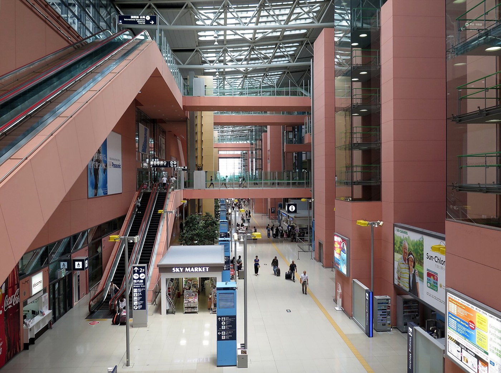
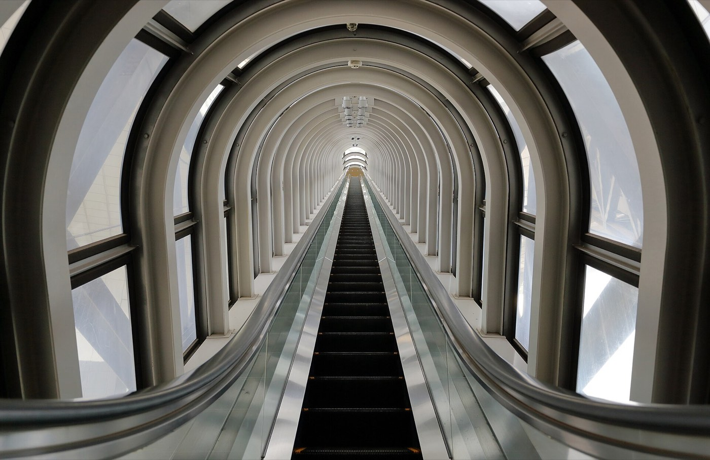
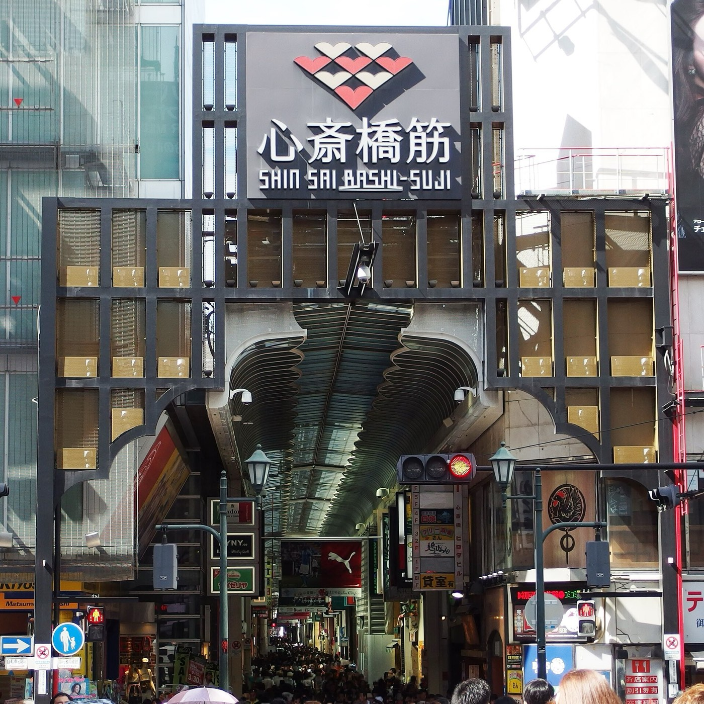
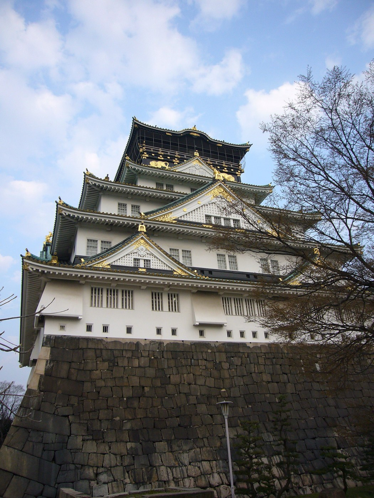

오사카 OSAKA
네온과 먹거리의 도시. 밤 17시 이후 도톤보리가 가장 활발하고, 레트로 신세카이와 마천루 우메다가 한 지하철권에 있습니다.
- 간사이공항 → 난바 라피트로 약 34~38분
- 메트로 기본요금 190엔 (추정)
- 에스컬레이터는 오른쪽에 서기 — 도쿄와 반대
오사카 · 교토 · 나라. 11월 하순, 천 년 고도의 산야가 붉게 물들고 절마다 가을 야간 조명이 켜지는 시기에 떠나는 3박 4일.
간사이는 오사카·교토·나라가 철도로 30~60분 거리라 한 도시에 묵으며 나머지를 당일로 다녀올 수 있습니다. 사진과 이름을 눌러 크게 볼 수 있어요.
네온과 먹거리의 도시. 밤 17시 이후 도톤보리가 가장 활발하고, 레트로 신세카이와 마천루 우메다가 한 지하철권에 있습니다.

천 년의 단풍. 후시미이나리 천 본 도리이, 기요미즈데라 무대의 붉은 산색, 히가시야마 골목까지 — 단풍철 주말·연휴에는 매우 붐빕니다.

사슴과 고도. 긴테쓰나라역에서 동쪽으로 나라 공원이 펼쳐지고, 도다이지 대불전·가스가타이샤 석등롱 길까지 한 바퀴 3~4시간 도보권입니다.
늦가을 교토의 밤은 낮보다 화려합니다. 아래 일정은 안내서 조사일(2026-10-25) 기준이며 요금은 추정값입니다.
정원 프로젝션 매핑. 니넨자카·네네노미치 산책길과 이어져 낮 코스와 붙이기 좋습니다.
“단풍의 에이칸도”로 불리는 교토 대표 야간 단풍 명소. 난젠지·철학의 길과 같은 권역입니다.
가을 야간 특별 관람. 예약 불필요 — 본당 무대에서 내려다보는 야경이 백미.
인천에서 간사이공항까지 비행시간 약 1시간 50분~2시간. 도착·출발 대부분은 제1터미널(T1)입니다. 시각은 항공편 추적 기준(추정), 가격은 11월 하순 출발 왕복 1인 기준 예시값입니다.
저비용항공 25만~32만 원 · 대형사 48만~56만 원 (왕복 1인, 출국세·유류할증 포함 가정)
일본 출국세 1인 3,000엔(2026-07-01 이후 발권분)이 보통 항공권에 포함됩니다. 보조 배터리는 기내 반입만 가능.

약 34~38분 · 1,490엔(추정, 전석 지정). 할인권 “간쿠 도쿠와리 라피트” 1,350엔. 공항급행(970엔, 약 45분)은 자유석이라 출퇴근 시간 혼잡.

JR 하루카는 덴노지 약 33분(1,800엔)·교토 약 80분(2,900엔, 예시)로 환승 없이 교토역 직행. 리무진 버스는 짐이 많을 때 유리하지만 도로 정체 영향을 받습니다.
| 구간 | 대표 철도 | 소요 | 요금 (편도·성인) |
|---|---|---|---|
| 간사이공항 → 오사카 난바 | 난카이 라피트 | 약 34~38분 | 1,490엔 (추정) |
| 오사카(요도야바시) → 교토(기온시조) | 게이한 특급 | 약 50분 | 430엔 (예시) |
| 오사카(우메다) → 교토(가와라마치) | 한큐 특급 | 약 44분 | 410엔 (예시) |
| 오사카역 → 교토역 | JR 신쾌속 | 약 29분 | 580엔 (예시) |
| 오사카난바 → 긴테쓰나라 | 긴테쓰 쾌속급행 | 약 40분 | 680엔 (추정) |
| 교토역 → 긴테쓰나라 | 긴테쓰 급행 | 약 45분 | 760엔 (예시) |

후시미이나리·기요미즈고조·기온시조역이 교토 동쪽 명소 가까이 있습니다. 특급은 후시미이나리에 서지 않아 단바바시 등에서 보통 열차로 갈아타야 합니다(추정).

오사카난바에서 쾌속급행 약 40분·680엔(추정), 시간당 약 4편, 예약 불필요. 역에서 나라 공원까지 도보 약 5~10분(JR나라역은 도보 약 20분).
안내서 기준 운영 시간·요금(추정·예시 포함)과 늦가을 방문 팁. 운영 정보는 바뀌기 쉬우니 방문 전 공식 사이트를 확인하세요.
글리코 간판. 17시 이후 가장 붐비니 저녁 식사와 묶어서.
Martin Falbisoner · CC BY-SA 4.0

가을엔 성 공원의 단풍이 백미. 해자 유람선 고자부네 1,500엔(예시).
勇寿憲 · CC BY-SA 3.0

쿠시카츠 거리. 아베노 하루카스 300(2,000엔, 예시)과 도보 15분.
Sakai Yayoi · CC0

지상 173m 옥외 회랑 — 단풍 뒤 도시 야경까지 한 번에.
掬茶 · CC BY-SA 4.0

지상에서 전망대까지 곧게 오르는 튜브 에스컬레이터가 볼거리.
Martin Falbisoner · CC BY-SA 4.0

지붕 있는 아케이드 — 11월 비 오는 날(월 7~10일) 우천 플랜으로 좋습니다.
Mc681 · CC BY-SA 4.0

오전이 활기차고 현금 위주. 난바에서 도보 10분이라 아침 동선에 넣기 좋아요.
Mr.ちゅらさん · CC BY-SA 4.0

외관과 공원 단풍뿐 아니라 천수각 내부 전시도 볼 만합니다. 우천 시 실내 대안으로 가이유칸(2,700엔, 예시)·USJ(8,600~10,900엔, 예시) — 난바에서 각각 30분·40분.
lienyuan lee · CC BY 3.0
09시 이후 급격히 붐빕니다 — 아침 첫 코스로. JR 이나리역도 바로 앞.
Basile Morin · CC BY-SA 4.0

11/21~30 야간 특별 관람(~21:00 입장, 500엔 추정, 예약 불필요). 낮·밤 단풍 모두 압도적.
Martin Falbisoner · CC BY-SA 4.0

정원과 대나무 숲. 야간에는 정원 프로젝션 매핑.
lumoplank · CC0

돌계단 양쪽의 교토 과자·공예 기념품. 야쓰하시 1상자 700~1,200엔(예시).
Andrea Schaffer · CC BY 2.0

사유 골목 촬영 금지 구역이 있고, 게이코·마이코 무단 촬영은 금지됩니다.
HAGAT hOMSZE · CC0

“교토의 부엌”. 꼬치·다시마키 300~800엔(예시) — 걸어 다니며 먹기는 금지.
Pitan · CC BY-SA 3.0
도후쿠지는 교토 손꼽히는 단풍 명소(단풍철 다리 위 촬영 금지·혼잡). 난젠지 수로각~철학의 길~긴카쿠지로 이어집니다.
아라시야마 단풍 절정 예상은 11/13 물들기 시작~11/24 무렵(추정, 출처별 상이). 오전 일찍이 한산합니다.

세계 최대급 목조 건물과 청동 대불. 개문 직후가 한산합니다.
Zairon · CC BY 4.0
사슴은 야생동물. 센베이를 들고 있으면 몰려들고 들이받을 수 있어요.
Marek Ślusarczyk (Tupungato) · CC BY 3.0

석등롱 참배길과 회랑의 청동 등롱. 가을 숲길 산책 그 자체가 목적지.
Zairon · CC BY 4.0

고후쿠지(국보관 900엔, 예시) → 도다이지 → 니가쓰도 전망 → 가스가타이샤가 기본 동선.
Martin Falbisoner · CC BY-SA 4.0

센베이를 보이면 고개를 숙여 인사합니다. 다 먹었거나 안 들고 있다고 손으로 보여주면 물러나요.
TR15336300101 · CC BY-SA 4.0
옛 상가 골목의 카페와 나라 산조도리·히가시무키 상점가(사슴 굿즈). 귀가 전 기념품 마무리 코스.
가격은 안내서 기준 1인·예시/추정값입니다. 작은 가게·노점은 현금만 받는 곳이 많으니 엔화 현금을 준비하세요.

치보 도톤보리점 1,800~2,200엔(추정), 미즈노 1,500~2,000엔(예시·목 휴무). 피크 시간 대기 흔함.
Joli Rumi · CC BY-SA 4.0

와나카 약 650엔(8개, 추정). 줄은 길지만 회전이 빠릅니다. 551 부타망(2개 420엔, 예시)도 난바 명물.
City Foodsters · CC BY 2.0

쿠시카츠 다루마 — 꼬치당 100~250엔, 1인 2,000~3,000엔. 공용 소스 두 번 찍기 금지, 꼭 한 번만!
Ajay Suresh · CC BY 2.0

기요미즈 준세이 정식 3,000~4,000엔(예시), 오쿠탄 난젠지 3,500엔(예시·목 휴무). 단풍 구경 후 담백한 한 끼.
ZhengZhou · CC BY-SA 4.0

히라소 나라점 세트 약 1,600엔(추정·월 휴무). 감잎 향이 나는 초밥은 포장해 기내 간식으로도.
Kyu3a · CC BY-SA 4.0
구운 가리비 800엔, 성게 1,500엔~, 과일 컵 500엔(예시). 오전이 가장 활기차고 현금 위주.
Mr.ちゅらさん · CC BY-SA 4.0
안내서의 이동·운영 정보를 조합한 예시입니다. 11/19(목)~22(일) 도착 기준 — 11/21부터 기요미즈데라 야간 관람, 11/20부터 에이칸도 조명이 시작됩니다.
오전 편으로 간사이공항 도착 → 난카이 라피트로 난바(약 37분) → 체크인 전 짐 보관 → 구로몬 시장 점심 → 신사이바시스지 산책 → 저녁 도톤보리(17시 이후가 가장 붐비지만 그때가 가장 화려하다). 치보 오코노미야키로 첫 저녁.
요도야바시에서 게이한으로 후시미이나리(09시 전 도착, 천 본 도리이 산책) → 게이한으로 기요미즈고조 → 기요미즈데라 → 산넨자카·니넨자카 → 고다이지. 해가 기우는 17시 전후 — 에이칸도 야간 조명이 이날 시작(17:30~20:30 입장, 1,000엔 추정) → 폰토초 저녁 → 게이한 특급으로 오사카 복귀.
오사카난바에서 긴테쓰 쾌속급행으로 나라(약 40분) → 도다이지 개문 직후(08:00 추정) → 니가쓰도 전망 → 나라 공원 사슴·센베이 → 가스가타이샤 석등롱 숲길 → 나라마치 카페. 저녁 복귀 후 신세카이 쿠시카츠. 원한다면 밤에 교토로 나가 기요미즈데라 야간 특별 관람(이날부터, 500엔 추정)도. 단, 토~월 일본 3연휴 혼잡을 감안하세요.
다니마치욘초메에서 오사카성 천수각(09:00 입장 시작, 공원 단풍 산책은 무료) → 난바로 돌아 돈키호테·다카시마야에서 면세 마무리 → 간사이공항에서 출발 2시간 전 도착. 2026-11-01부터 면세는 “일단 내고 공항에서 환급” — 세관 확인 시간이 필요하니 더 여유를 두고 도착하세요.
조사일 2026-10-25 기준. [확인]은 공식 출처, 그 외는 추정·예시값입니다.
| 지역 | 최고 | 최저 | 강수량 |
|---|---|---|---|
| 오사카 | 17.8℃ | 10.2℃ | 72.5mm |
| 교토 | 16.9℃ | 7.9℃ | 74mm |
| 나라 | 16.5℃ | 6.5℃ | 65mm |
source/images/CREDITS.json에 있습니다.
여행 정보의 기준 데이터는 source/kansai-guide.md(조사일 2026-10-25)이며, 요금·시각 중 추정·예시값이 포함되어 있습니다. 실제 계획 전 각 시설·항공 공식 사이트에서 확인하세요.